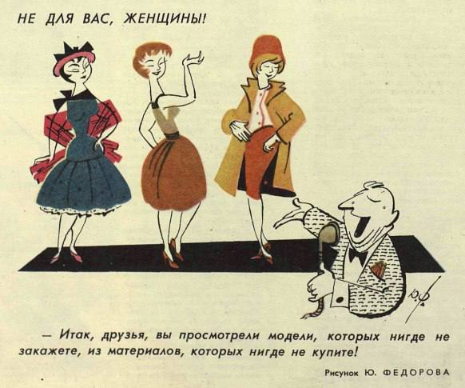
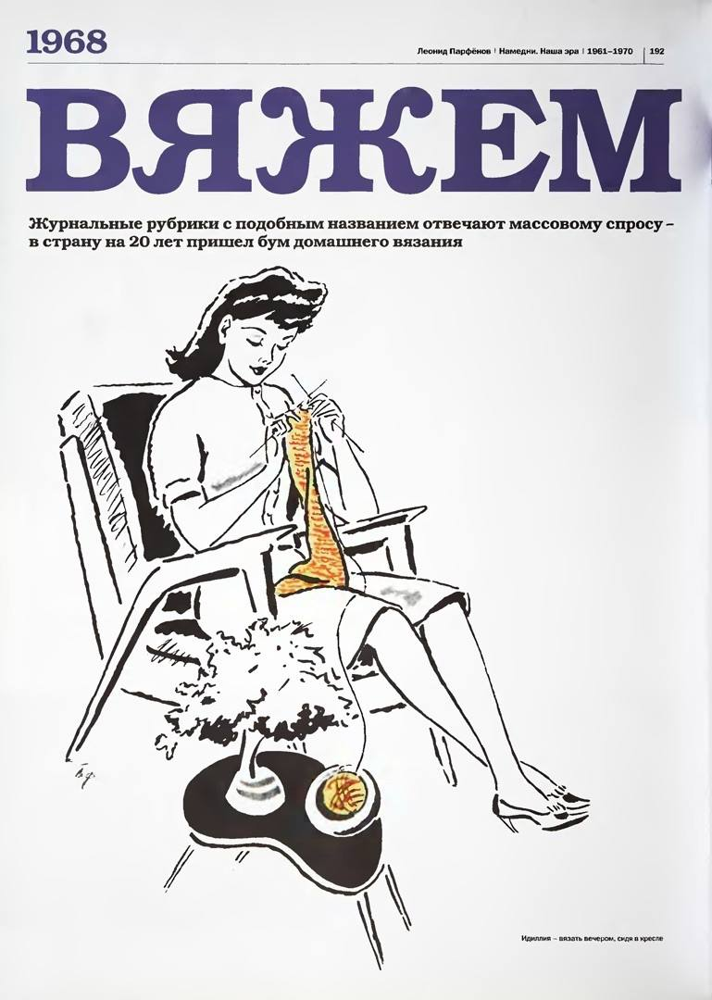

После второй мировой войны, советская мода начинает развиваться с оглядкой на Запад, но гораздо медленнее. Есть в этом и «заслуга» военных лет, жители оккупированных территорий увидели другой уклад, другое отношение к внешнему виду, другие фасоны. Из Америки и других стран присылалась гуманитарная помощь, в которой в том числе и была иная, непривычная для советских граждан одежда. Стоит заметить, гражданам, живущим за занавесом, западная мода пришлась по душе.
В 1960-е годы многие крупные города имели собственные Дома моделей. Модные показы и, так называемые, творческие отчёты для населения проводились даже в сельских Домах культуры. Так что посмотреть на модную одежду и узнать о том, чем занимаются модельеры-конструкторы, мог каждый советский труженик. Такие показы обязательно сопровождались комментариями искусствоведа, рассказывающего не только о демонстрируемых моделях и новых тенденциях моды, но и о том, что такое хороший вкус, как найти свой стиль, что можно сочетать в комплекте одежды и чего следует избегать.
Главным учреждением, определяющим направление официальной моды, был ОДМО – Общесоюзный Дом Моделей одежды в Москве. В Доме моделей работали самые крупные профессионалы модельного дела - Вера Аралова, Тамара Файдель, Лина Телегина, Татьяна Осьмеркина, Елена Стерлигова, Александр Игманд и многие другие советские модельеры. В 1965 году в ОДМО пришел работать молодой модельер Слава Зайцев, ставший одной из самых значимых фигур в истории отечественного модельного бизнеса. Его творческие разработки еще в период СССР были замечены на Западе. В 1965 -1968 годах за создание «Русской серии» французская пресса назовет Зайцева «Красным Диором».
В начале 60-х привычный лексикон советского человека был обогащен множеством новых терминов: нейлон, лавсан, кримплен, орлон, ацетат, дедерон, болонья. Все эти синтетические ткани были настоящей находкой для своего времени: их было легко стирать и чистить, они быстро сохли и не требовали глажки, эффектно выглядели и не давали сильной усадки.
Зима
Теплые и уютные материалы, такие как шерсть, кашемир и мех, были основными в зимней моде 1960-х
годов в СССР. Женщины предпочитали пальто с меховыми воротниками и манжетами для дополнительного
утепления. Вязаные изделия, такие как свитера, шарфы и шапки, также были популярными в зимнем
гардеробе.
Обувь включала сапоги с меховой подкладкой или утепленные ботинки, чтобы защитить от холода и снега.
Цветовая палитра оставалась приглушенной, с оттенками серого, коричневого и черного, что отражало
холодную зимнюю атмосферу.
Мода 1960-х годов в СССР также отличалась скромностью и умеренностью в стиле. Женщины предпочитали
классические и элегантные силуэты, а акцент делался на качестве материалов и деталях, таких как
меховые отделки.
В 60-е мода на искусственные шубы и искусственные меха захватил абсолютно всех, даже людей имеющих
возможность покупать вещи из натурального меха. Буквально на несколько лет все советские модницы
облачились в шубы из искусственной норки.
Мода на искусственный мех закончилась также внезапно, как и началась, а очередные трофеи моды
пополнили ряды вечно растущих гардеробных.
Альтернативой легкому платью в холодное время могли стать юбки с широкими лямками, которые носили с
водолазками, свитерами и блузками. Также в моде были платья без рукавов, которые надевали поверх
рубашек.
1960-е годы в СССР были популярны сапожки с войлочным или суконным верхом, молнией впереди, на
плоской резиновой подошве. Внешне простоватые, но очень теплые, удобные и не скользкие.
Весна
Весенняя мода 1960-х годов в СССР была также вдохновлена умеренностью и классическим стилем. Женщины
предпочитали легкие и воздушные ткани, такие как хлопок и лён, для создания своих весенних нарядов.
Платья с короткими рукавами и юбки-карандаши были популярными вариантами для повседневного
гардероба.
Цветовая палитра включала яркие и сочные оттенки, такие как красный, синий, зелёный и жёлтый, чтобы
отразить радостное настроение весны. Цветочные принты и узоры также были популярными в дизайне
одежды.
Обувь для весеннего сезона включала легкие туфли на невысоком каблуке или балетки, чтобы подчеркнуть
женственность и лёгкость образа.
В целом, весенняя мода 1960-х годов в СССР отличалась свежестью, яркостью и женственностью, отражая
изменения в обществе и стремление к новым модным тенденциям.
Начиная с 62-го года советские граждане впервые знакомятся с темно-синими итальянскими плащами
Болонья. У итальянцев этот материал использовался для рабочей одежды. Нас же он покорил своей
новизной и тем, что в сложенном виде одежда из такого материала почти не занимала место. В массовом
сознании советских людей складывалось убеждение, что каждый уважающий себя человек должен иметь плащ
Болонью.
В 1960-е мир охватила битломания, даже в СССР проникли песни группы The Beatles. Молодежь сразу
начала подражать кумирам, и в моду вошли так называемые битловки — водолазки, которые надевали под
пиджак вместо рубашки.
Лето
Появившись в конце 60-х, мини мгновенно завоевало титул самой модной женской одежды на целое десятилетие. Там где это было возможно (в школах и техникумах) блюстители морали и председатели комсомольских ячеек по утрам измеряли длину юбок и расстояние от коленок до юбок линейками и при несоответствии отправляли учениц домой переодеваться. Короткая длина юбки порицалась, высмеивалась, запрещалась, но все было бесполезно.
Осень
Абсолютно модным и относительно неприличным явлением становится женский брючный костюм. Крой первых
костюмов, как правило, не сложный – жакет прямой или слегка приталенный, брюки прямые или слегка
расклешенные, большие металлические пуговицы, воротник “Собачьи уши”. Вместе с костюмом носили
тупоносые туфли с толстыми и не очень высокими каблуками.
Женский брючный костюм в СССР – это начало эмансипации. Носить брюки, не смотря на моду, осуждалось
обществом и ношение женщиной костюма было как вызов, как дерзость.
Дефицит одежды и тканей
Нахождение хорошей одежды стало национальной идеей. Постоянный дефицит, затоваривание одинаковой, плохо сшитой, а зачастую и бракованной продукцией, приводили к тому, что люди часами готовы были стоять в очередях, из маленьких населенных пунктов они ехали в большие города и штурмовали крупные универмаги, в которых чаще всего в продаже появлялись достойные вещи. В магазины Москвы и Ленинграда съезжался народ со всех уголков СССР. Очереди, номера, отмечание, переклички – все это стало неотъемлемой частью жизни советских людей. В стране сформировалась целая армия перекупщиков, постоянно шастающих по магазинам и скупающих там ходовые вещи, которые можно было быстро и выгодно перепродать.
Сатирический журнал «Крокодил», выпуск №9, 1962 г.

Вязание в СССР
Настоящий бум на вязание начался в конце 60-х, легкая промышленность того времени не была способна
удовлетворить потребности в красивой и современной одежде, вот тогда и мастерицы взяли спицы и
начали создавая моду своими руками.
Любая умеющая вязать женщина считалась модницей. Себе женщина могла связать весь гардероб — от
красивых кофт с высоким воротом, модные в те времена безрукавки, жилеты, юбки вязали прямые,
расклешенные и плиссе, платья на каждый день и «на выход», и до модных пальто-кардиганов.
Книги по вязанию спицами и крючком были большой редкостью, поэтому зачитывали их до дыр, брали на
время журналы у соседки, гонялись за модными узорами, переписывали в библиотеке из журнала «Бурда».
Женщины на работе обсуждали схемы и узоры, вязать умудрялись даже на рабочем месте, предварительно
спрятав вязание в стол. Некоторые мастерицы могли вязать всю ночь, чтобы на следующий день
продемонстрировать коллективу обновку
Советские карикатуры на вязальщиц